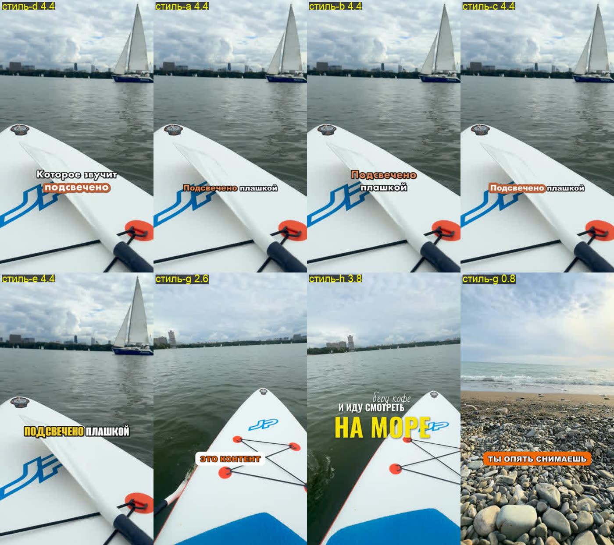

Монтаж вертикальных роликов для Reels и Shorts силами ИИ-агента: ему говоришь, что нужно, он режет по словам, ставит субтитры, звуки и переходы. Работает на Mac с M1–M4. Агент — Codex или Claude Code. Всё на ffmpeg и Whisper, расшифровка локальная и бесплатная.
git clone git@github.com:vito2005/reels-kit.git ~/reels-kit cd ~/reels-kit && ./install.sh
Поставит ffmpeg, yt-dlp, Whisper и Python-окружение. Около 10 минут, если попросит — ввести пароль от мака.
./install.sh sfx denoise # поиск звуков, шумодав ./install.sh face # замена лица ./install.sh voice # голос персонажа
Codex сам прочитает AGENTS.md: там все команды и правила монтажа. Объяснять ему ничего не нужно.
Обычными словами. Видео можно указать путём или просто перетащить файл в окно Codex.
Готовый файл агент кладёт в папку ролика. Смотреть лучше с телефона: так видно, что субтитры не закрыты кнопками Reels.
Все примеры собраны этими инструментами. Звук включается кнопкой на видео.
Звучащее слово в плашке, блок в две строки, разрывы по склейкам.
Цвет плашки — кто говорит. После последней реплики — ба-дум-тсс.
Капс, рукописные вставки и жёлтое крупное слово с анимацией.
Подложка под весь ролик, кадр ровно в три доли, время дня на кадре.
Тот же монтаж, но кадр уезжает вбок со смазом, на стыке вжух.
Кроп на деталь и окно, которое едет за объектом. Для лиц точки находит macOS.

В папке tools/fonts 25 шрифтов с кириллицей, любой можно подставить в стиль.
Рилсы, Shorts, TikTok в оригинальном качестве, без логина. Звук — под свой липсинк.
Вжухи, удары, провал, смех зала. Поиск по описанию: «cartoon boing» находит нужный.
Для записей, где телефон лежит далеко: убирает шум, тихие голоса подтягивает к громким.
По высоте голоса отличает ребёнка от взрослого — для субтитров с разными говорящими.
Своё лицо на героя сцены из фильма по 4–6 фото. Около 5 кадров в секунду на M4.
Отделить голос от музыки и произнести новую фразу голосом героя по 10 секундам образца.
Клипы iPhone в HDR не выцветают при перекодировании, это делается само.
Каждый ролик приводится к уровню Instagram и YouTube, записи с телефона не тонут.